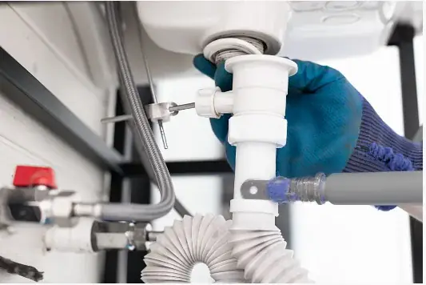

About Drain Cleaning Advisor
We are dedicated drain cleaning and sewer clearing specialists. Our service philosophy is built on clear communication: we run a high-definition video camera first, show you the exact blockage on screen, and quote the firm cost in writing before any tool touches your pipe.
Deep Community Connections in Collier County
We live, work, and raise our families right here in Naples, Florida. Our commitment to the community extends beyond fixing broken drains to actively protecting Southwest Florida's unique coastal heritage.
Protecting Naples Bay & Estuaries
Unresolved sewer backups pose grave environmental risks when sewage overflows into stormwater gutters leading to Gordon River and Naples Bay. By clearing mainlines rapidly and properly, we stop sewer spills before they reach coastal waters.
Local Plumbing Code Stewardship
We work closely with local Collier County building officials and utilities departments to ensure every cleanout installation, sewer replacement, and commercial grease interceptor tie-in satisfies the highest environmental safety standards.
100% Satisfaction Workmanship Pledge
If a drain we clear backs up again within our guaranteed warranty window due to organic matter, our technician returns promptly to re-camera and re-clear the line at zero additional charge to the homeowner.
The Drain Cleaning Advisor Service Standard of Excellence
Plumbing repairs in luxury residences require unmatched discretion, complete pricing transparency, and certified technical mastery.
Precision Digital Documentation
Every inspection camera video file is digitally cataloged with timestamp and distance tracking. We email you full HD footage and diagnostic reports directly, providing essential documentation for your insurance provider, property manager, or real estate disclosure file.
Zero Bait-and-Switch Pricing
We quote a firm, guaranteed flat price before any mechanical tool touches your pipe. If clearing takes longer than anticipated, your price never changes. We do not charge overtime fees, travel surcharges, or hidden disposal fees.
Continuous Technician Education
Plumbing technology evolves rapidly. Our technicians attend mandatory quarterly technical seminars covering trenchless pipe lining, cured-in-place pipe (CIPP) compatibility, advanced rotary nozzle fluid dynamics, and modern Florida plumbing code revisions.
Our Apprenticeship Standards & Diagnostic Equipment Fleet
Drain cleaning is a specialized mechanical discipline that requires deep understanding of hydraulic physics, pipe metallurgy, soil subsidence, and micro-camera navigation.
5-Year Certified Apprenticeship
Our lead technicians complete comprehensive vocational training covering sanitary drainage design, venting codes, backflow prevention, and diagnostic sewer camera interpretation across both residential and commercial infrastructure.
Full State & County Licensing
We operate with full active plumbing licensing registered with Collier County Building Review and the Florida Department of Business and Professional Regulation (DBPR), holding $2M+ in commercial liability protection.
Self-Contained Mobile Service Vans
Every Drain Cleaning Advisor dispatch van operates as a mobile diagnostic workshop, stocked with multiple cable drum units, self-leveling SeeSnake cameras, high-pressure jetting lines, replacement cleanout caps, and protective floor gear.
Two Decades of Specialized Drainage Service in Naples, FL
Founded in Collier County, Drain Cleaning Advisor was built on a simple conviction: drainage problems demand specialized diagnostic equipment, certified drain clearing experts, and complete pricing transparency.
Diagnostic-First Philosophy
We never run motorized cables blindly into an underground lateral. Every major service begins with high-definition color camera scoping. We inspect the interior pipe walls, diagnose the precise root entry point, crack, or grease dam, and present clear video evidence to you on our monitor before asking for authorization.
Upfront Flat-Rate Pricing
We eliminate the stress of ticking hourly clocks and surprise add-on charges. After diagnosing your line, our technician gives you a firm, written quote. The price we quote before starting is the exact price you pay upon completion. You retain total control over your home's repairs.
Licensed & Background-Vetted
Every technician on our team undergoes rigorous background checks, drug screenings, and ongoing technical training. We hold full Collier County and State of Florida commercial plumbing licensing, carrying multi-million dollar liability insurance to protect your luxury residential or commercial property.
Protecting Naples Coastal Marine Ecosystems
Naples is blessed with world-class natural beauty, from the mangrove estuaries of Gordon River to the pristine waters of the Gulf of Mexico. Sanitary sewer overflows and caustic drain chemical dumping pose severe threats to local marine life, manatees, and coastal water quality.
Drain Cleaning Advisor champions 100% mechanical and water-based clearing methods. By refusing to use toxic sulfuric acid or caustic lye drain openers, we protect your pipes from chemical corrosion while keeping hazardous chemicals out of Collier County wastewater treatment plants and coastal runoff channels.
We resolve 100% of organic blockages through physical cable cutters and fresh-water hydro scouring.
Our Spartan trailer jetters use high-pressure fluid dynamics to achieve maximum pipe scrubbing while minimizing fresh water consumption.
Frequently Asked Questions About Drain Cleaning Advisor
How long has Drain Cleaning Advisor been serving Collier County?
Our team has provided professional drain cleaning and sewer clearing services to Naples homeowners, luxury estate managers, and commercial businesses since 2005. Over two decades, we have handled tens of thousands of complex subtropical root intrusions, coastal sand blockages, and vintage cast-iron restorations.
Do you service both residential homes and commercial businesses?
Yes. Our fleet handles everything from single-family home shower clogs and condominium kitchen stacks to commercial restaurant grease lines, golf club clubhouse drainage, and HOA storm drain clearing across Collier County.
What guarantees do you offer on drain cleaning work?
We provide full workmanship warranties on all our clearing services. Because we camera-inspect the line after clearing, we verify that the blockage is 100% extracted and confirm the structural soundness of your pipe before closing the service ticket.
Transparent Written Estimates & Multi-Year Workmanship Warranties
We believe that honest customer relationships are the foundation of our business. After diagnosing your pipe with high-definition camera scoping, we present a firm written quote outlining your exact options. You authorize the work only after reviewing the numbers, and every service is backed by our verified workmanship warranty for complete peace of mind.
Certified Drain Cleaning Specialists You Can Trust
Our technicians do not cut corners or push unnecessary pipe replacements. If an isolated cable clearing resolves your stoppage, that is what we recommend. If heavy root penetration requires high-pressure hydro scouring, we show you the monitor footage so you understand the reason. We treat your home with the same care and respect as our own.
Why Video Diagnostics Define Our Service
Serving Naples homeowners and businesses since 2005, we have seen how stressful plumbing backups can be. Too often, customers are left wondering whether they paid for the right repair or simply an educated guess.
We eliminated guesswork by making video camera inspections our first operational step. When you invite Drain Cleaning Advisor into your home, you look at the monitor screen alongside our technician. You see the ficus root cluster, the grease obstruction, or the broken pipe joint for yourself.
Once you understand the exact condition of the pipe, we give you a firm, written quote. If a simple mechanical cable will do the job, that is what we recommend. If the pipe requires high-pressure hydro jetting or structural repair, we explain why and show you the evidence.

Collier County Florida
What Guides Every Service Call
No Blind Tooling
We do not shove motorized machinery into drains without knowing what lies ahead. Inspecting with high-definition optical cameras protects your pipes from damage.
Firm Upfront Numbers
You review and authorize all pricing in writing before we begin work. No hidden travel surcharges, unexpected hourly creep, or unapproved additions.
Clean, Respectful Technicians
We wear shoe covers, protect your flooring with heavy drop cloths, clean our tools after every job, and test all cleared drains under water volume before leaving.